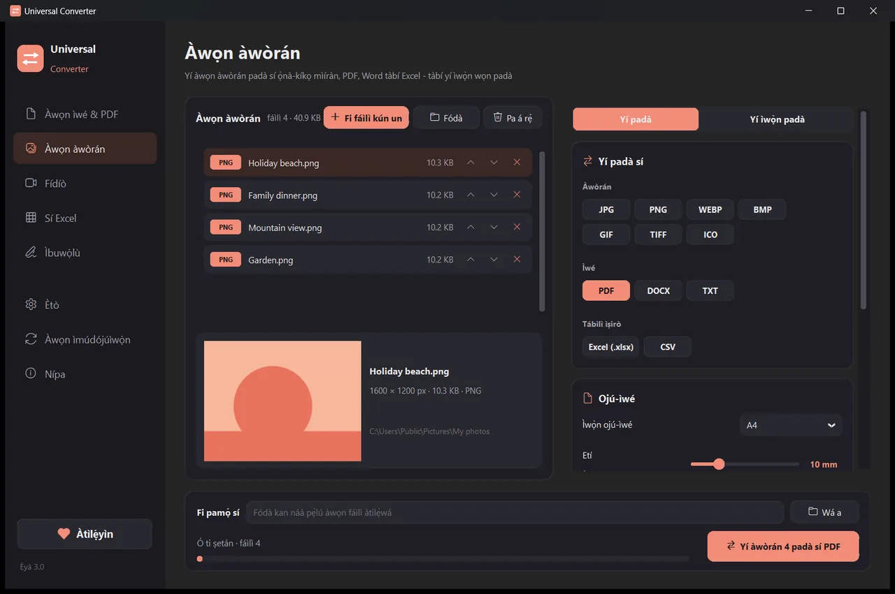
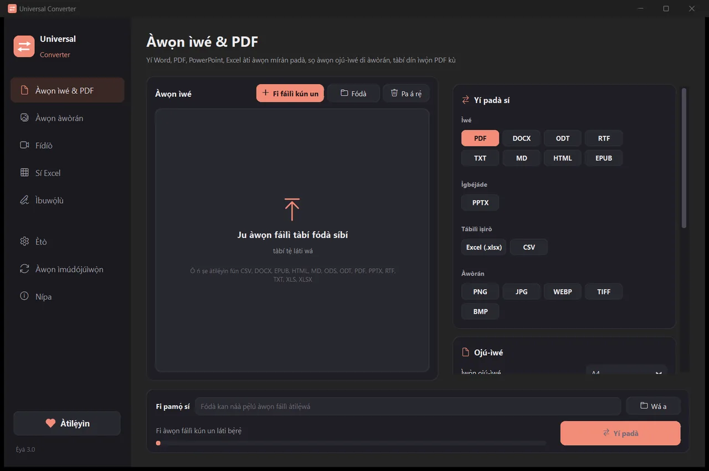
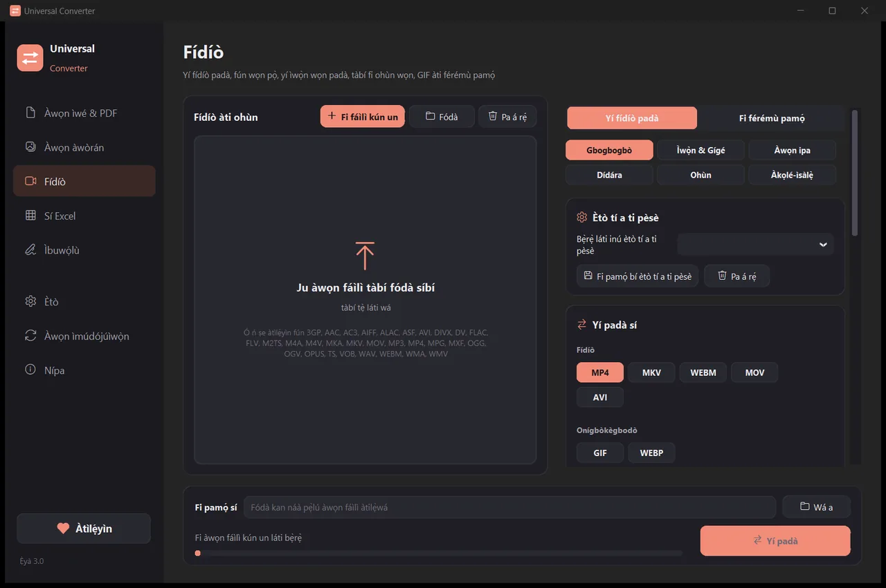
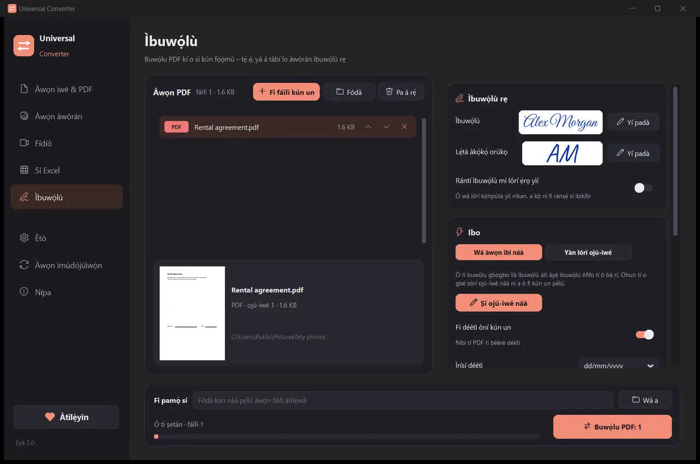

Yí àwọn fáìlì rẹ padà lórí ẹ̀rọ tìrẹ
Àwòrán, ìwé, fídíò àti ohùn, PDF àti tábìlì sí Excel, gbogbo rẹ̀ nínú áàpù kan. A kò gbé nǹkan kan sókè: àwọn fáìlì rẹ kò ní kúrò lórí ẹ̀rọ rẹ láé.
Bí a ṣe ń fi sórí ẹ̀rọ àti ṣe ìmúdójúìwọ̀n
- Ṣí .dmg tí o gbà sílẹ̀, kí o sì fa Universal Converter sínú Applications.
- Ṣí áàpù náà. Ní ìgbà àkọ́kọ́, macOS yóò dí i nítorí Apple kò buwọ́lu ú: tẹ Done.
- Ṣí System Settings > Privacy & Security, yí lọ sísàlẹ̀, tẹ Open Anyway kí o sì tẹ ọ̀rọ̀ aṣínà rẹ. Ẹ̀ẹ̀kan ṣoṣo ni o máa ṣe èyí.
Ìmúdójúìwọ̀n: bí o bá gbà á láàyè nígbà tí áàpù kọ́kọ́ ṣí, yóò máa ṣàyẹ̀wò ẹ̀yà tuntun ní gbogbo ìgbà tí ó bá bẹ̀rẹ̀, yóò fìdí ìbuwọ́lù díjítà wọn múlẹ̀, yóò sì fi wọ́n sórí ẹ̀rọ nígbà tí o bá yàn.
Bí a ṣe ń fi sórí ẹ̀rọ àti ṣe ìmúdójúìwọ̀n
- Tẹ “Gbà á sílẹ̀ fún Android” lórí fóònù rẹ.
- Ṣí fáìlì tí o gbà sílẹ̀. Bí Android bá béèrè, gba aṣàwákiri tàbí olùṣàkóso fáìlì rẹ láàyè láti fi áàpù sórí ẹ̀rọ.
- Tẹ Install.
Ìmúdójúìwọ̀n: áàpù náà ń ṣàyẹ̀wò ní nǹkan bí ẹ̀ẹ̀kan lójúmọ́, ó sì ń sọ fún ọ nígbà tí ẹ̀yà tuntun bá ṣetán. Gbà á sílẹ̀ lọ́nà kan náà kí o sì fi í sórí èyí tí ó ti wà; a ó tọ́jú àwọn ètò rẹ.

Ìkọ̀kọ̀
Gbogbo nǹkan ń ṣiṣẹ́ lórí ẹ̀rọ rẹ. Kò sí gbígbé sókè, kò sí dídúró ní ìlà, kò sí ààlà ìwọ̀n.
Ọ̀fẹ́
Ọ̀fẹ́ ni láti lò, láìsí ìpolówó, àkọọ́lẹ̀ tàbí àmì-omi.
Èdè 18
Yorùbá, English, Gíríìkì, Spanish, Italian, German, French, Portuguese, Pólándì, Russian, Lárúbáwá, Hébérù, Ṣáínà, Japanese, Korean, Támílì, Afrikaans àti Hausa.
Irinṣẹ́ márùn-ún nínú fèrèsé kan

Àwọn ìwé & PDF
Yí padà láàárín PDF, Word, ODT, RTF, TXT, Markdown, HTML, EPUB, PowerPoint àti Excel. Sọ ojú-ìwé di àwòrán, kí o sì da ọ̀pọ̀ fáìlì pọ̀ sí PDF kan. A ń tọ́jú fọ́ǹtì, ìwọ̀n àti àwọ̀. Dín ìwọ̀n PDF kù sí ìwọ̀n tí o yàn.
Àwọn àwòrán
Yí padà láàárín JPG, PNG, WEBP, TIFF, BMP, GIF àti ICO. Yí ìwọ̀n padà nípa píksẹ́lì, ìdá-ọgọ́rùn-ún tàbí ìwọ̀n fáìlì, da àwòrán pọ̀ sí fáìlì PDF tàbí Word, kí o sì ka ọ̀rọ̀ inú àwòrán (OCR). O tún lè fi PDF kún un: ojú-ìwé kọ̀ọ̀kan yóò di àwòrán.

Fídíò
Yí fídíò padà láàárín MP4, MKV, WebM, MOV àti AVI, kí o sì fún wọn pọ̀ pẹ̀lú AV1, H.265, H.264 tàbí VP9. Kúrú, gé, yí po, yí ìwọ̀n padà, ṣe GIF, fi férémù pamọ́ bí àwòrán, tàbí tọ́jú ohùn nìkan bí MP3, M4A, FLAC, WAV, OGG tàbí Opus. Lórí Android: MP4, MKV, WebM, MOV tàbí GIF, tàbí ohùn nìkan bí M4A, OGG tàbí WAV; kúrú, gé, yí po, yí ìwọ̀n padà kí o sì fi férémù pamọ́.

Sí Excel
Mú tábìlì jáde láti inú PDF, ìwé tí a ṣàyẹ̀wò àti fọ́tò sí Excel tàbí CSV: àkọsílẹ̀ báǹkì, ìwé-owó, àkójọ iye owó. Ó ń ka Yorùbá, English, Gíríìkì àti èdè mìíràn tó ju 30 lọ.

Ìbuwọ́lù
Buwọ́lu PDF kí o sì kún fọ́ọ̀mù. Tẹ orúkọ rẹ ní ọ̀nà ìkọ̀wé ọwọ́, ya ìbuwọ́lù rẹ tàbí lo fọ́tò rẹ̀. Ìṣàfilọ́lẹ̀ náà ń rí àwọn ìlà ìbuwọ́lù fúnra rẹ̀, tàbí kí o tẹ ibi tí ìbuwọ́lù, lẹ́tà àkọ́kọ́, déètì, ọ̀rọ̀ tàbí àmì yẹ kí ó lọ. Buwọ́lu ọ̀pọ̀ fáìlì lẹ́ẹ̀kan; àwọn àtilẹ̀wá kò ní yí padà.
- Ó ń lo káàdì àwòrán rẹ fún fídíò nígbà tí ó bá lè ṣe é: ó máa ń yára ní ìlọ́po 5 sí 20.
- Fà gbogbo fódà wọlé: a ó yí gbogbo fáìlì padà lẹ́ẹ̀kan.
- Ó ń sọ fún ọ nígbà tí fáìlì kan bá jẹ́ ti táàbù mìíràn, ó sì ń gbé e lọ síbẹ̀ pẹ̀lú títẹ̀ kan.
- Ó ń sọ fún ọ nípa ẹ̀yà tuntun; lórí Windows àti Mac ó lè fi wọ́n sórí ẹ̀rọ fún ọ, lẹ́yìn tí ó bá fìdí wọn múlẹ̀ ní ọ̀nà díjítà.
- Ìrísí ìmọ́lẹ̀ àti dúdú, láti bá ẹ̀rọ rẹ mu.
Bí ó ṣe ń ṣiṣẹ́
- Ṣí Universal Converter kí o sì yan Àwọn ìwé & PDF · Àwọn àwòrán · Fídíò · Sí Excel · Ìbuwọ́lù ní apá òsì.
- Fà àwọn fáìlì rẹ tàbí gbogbo fódà kan sínú fèrèsé, tàbí tẹ “Fi fáìlì kún un”.
- Tẹ “Yí padà”. A ó fi àwọn fáìlì tuntun pamọ́ lẹ́gbẹ̀ẹ́ àwọn àtilẹ̀wá, tàbí sínú fódà tí o yàn.
Ohun tí ó lè ṣe
- Yí PDF padà sí Word
- Yí ìwé Word padà sí PDF
- Da ọ̀pọ̀ fáìlì pọ̀ sí PDF kan
- Fún PDF pọ̀ sí ìwọ̀n tí o yàn
- Yí ojú-ìwé PDF padà sí àwòrán JPG
- Sọ ìwé tí a ṣàyẹ̀wò di fáìlì Word tí a lè ṣàtúnṣe
- Yí àwòrán padà láàárín JPG, PNG, WEBP àti àwọn mìíràn
- Yí ìwọ̀n àwòrán padà tàbí dín wọn kù sí ìwọ̀n fáìlì kan
- Da fọ́tò pọ̀ sí PDF kan
- Da ọ̀rọ̀ inú àwòrán kọ (OCR)
- Fún fídíò pọ̀ láìgbé e sókè
- Yí fídíò padà láàárín MP4, MKV, WebM, MOV àti AVI
- Fi ohùn fídíò pamọ́ bí MP3
- Ṣe GIF láti inú fídíò
- Mú tábìlì láti inú PDF lọ sí Excel
- Yí PDF àkọsílẹ̀ báǹkì padà sí Excel
- Mú tábìlì jáde láti inú ìwé-owó PDF sí Excel
- Buwọ́lu PDF
- Kún fọ́ọ̀mù PDF
Àwọn ìbéèrè
Ṣé ọ̀fẹ́ ni lóòótọ́?
Bẹ́ẹ̀ ni. Universal Converter jẹ́ ọ̀fẹ́ láti lò, láìsí ìpolówó, àkọọ́lẹ̀ tàbí ààlà àkókò. Bí ó bá ràn ọ́ lọ́wọ́, o lè ṣe àtìlẹ́yìn fún ìdàgbàsókè rẹ̀ pẹ̀lú ìdáwó àtinúwá, ṣùgbọ́n kò pọn dandan láé.
Ṣé a ń gbé àwọn fáìlì mi sókè sí ibìkan?
Rárá. Gbogbo ìyípadà ń ṣẹlẹ̀ lórí ẹ̀rọ tìrẹ, nítorí náà ó tún ń ṣiṣẹ́ láìsí íńtánẹ́ẹ̀tì. Áàpù náà ń lọ sórí íńtánẹ́ẹ̀tì láti ṣàyẹ̀wò ìmúdójúìwọ̀n nìkan, láti gba àwọn álífábẹ́ẹ̀tì ìdámọ̀ ọ̀rọ̀ tí o yàn sílẹ̀ àti, bí o bá gbà á láàyè, láti fi ìròyìn àṣìṣe aláìlórúkọ ránṣẹ́.
Windows ń fi ìkìlọ̀ SmartScreen hàn. Ṣé èyí dára?
Bẹ́ẹ̀ ni. A kò tíì buwọ́lu olùfisórí-ẹ̀rọ náà pẹ̀lú ìwé-ẹ̀rí kóòdù, nítorí náà Windows kò mọ̀ ọ́n. Yan "Ìsọfúnni sí i" (More info), lẹ́yìn náà "Ṣe é bẹ́ẹ̀" (Run anyway). Áàpù náà fúnra rẹ̀ ni yóò fìdí àwọn ìmúdójúìwọ̀n tó tẹ̀lé e múlẹ̀ ní ọ̀nà díjítà. Tàbí fi í sórí ẹ̀rọ láti Microsoft Store, tí kò fi ìkìlọ̀ kankan hàn.
Báwo ni mo ṣe lè ṣí i lórí Mac?
Ṣí fáìlì tí o gbà sílẹ̀, kí o sì fa Universal Converter sínú Applications. Apple kò buwọ́lu áàpù náà, nítorí náà ní ìgbà àkọ́kọ́ tí o bá ṣí i, macOS yóò dí i: tẹ Done, lẹ́yìn náà ṣí System Settings > Privacy & Security, tẹ "Open Anyway" kí o sì tẹ ọ̀rọ̀ aṣínà rẹ. Ẹ̀ẹ̀kan ṣoṣo ni o máa ṣe èyí.
Báwo ni mo ṣe lè fi í sórí Android?
Gba APK sílẹ̀ sórí fóònù rẹ, ṣí i, kí o sì gba ìfisórí-ẹ̀rọ láàyè nígbà tí a bá béèrè (Android 10 tàbí èyí tó tẹ̀lé e). Gbogbo èdè 18 ló wà nínú rẹ̀; yan ọ̀kan nínú Ètò áàpù náà. Áàpù náà yóò sọ fún ọ nígbà tí ẹ̀yà tuntun bá wà.
Àwọn èdè wo ló ń sọ?
Áàpù náà wà ní Yorùbá, English, Gíríìkì, Spanish, Italian, German, French, Portuguese, Pólándì, Russian, Lárúbáwá, Hébérù, Ṣáínà, Japanese, Korean, Támílì, Afrikaans àti Hausa. O lè yan èdè nínú olùfisórí-ẹ̀rọ, tàbí lẹ́yìn náà nínú Ètò.